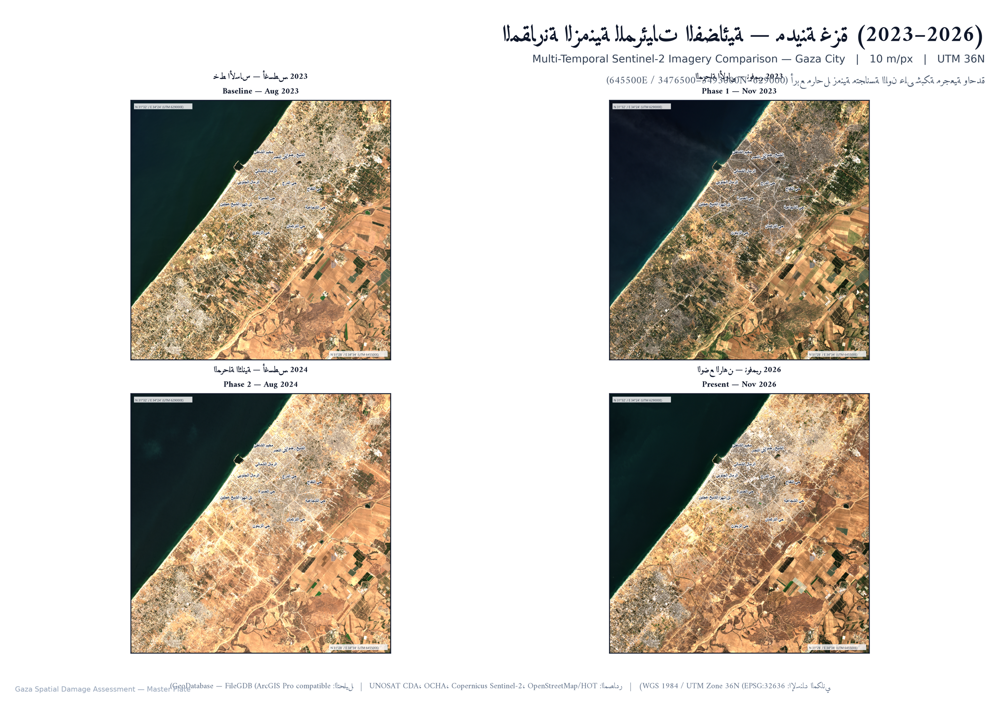
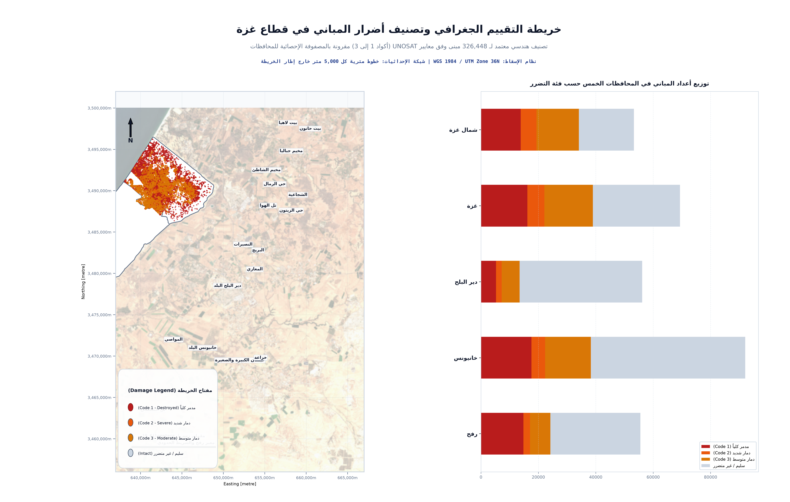
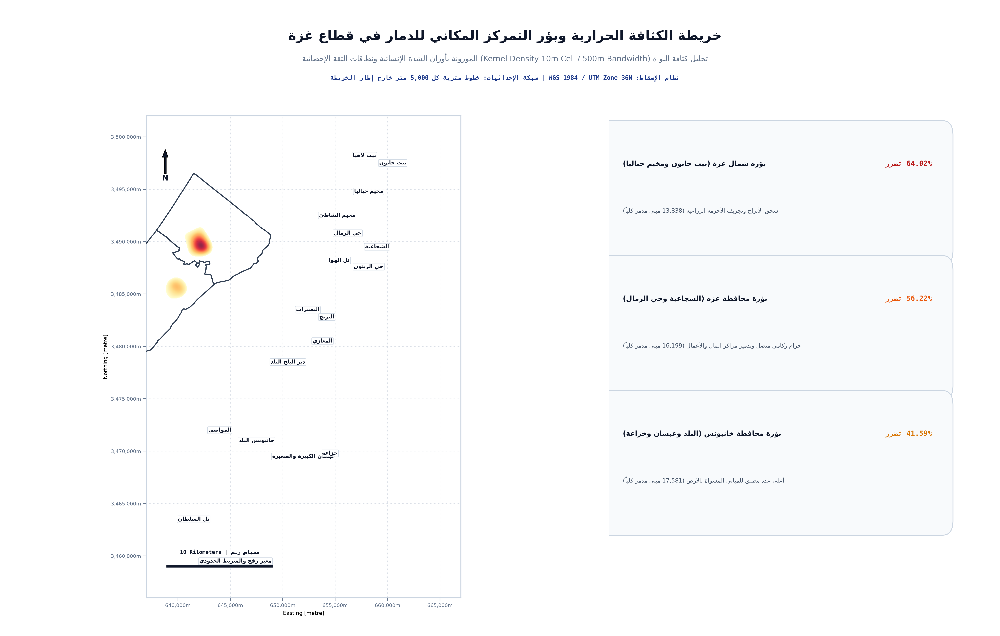

الدليل التطبيقي والتقرير المكاني الشامل لتقييم دمار قطاع غزة على ArcGIS Pro
مشروع جيومكاني حقيقي وموثق يشتمل على قاعدة بيانات جغرافية مكتملة (File Geodatabase) وملف مشروع معتمد (.aprx)، يوثق تدرج الدمار العمراني من خط الأساس قبل الحرب وحتى الوضع الراهن وفق أحدث بروتوكولات الأمم المتحدة (UNOSAT).
D:\Gaza_Damage_Assessment_Project\ArcGIS_Pro_Project\Gaza_Damage_Assessment.aprxD:\Gaza_Damage_Assessment_Project\ArcGIS_Pro_Project\Gaza_GIS_Master.gdbWGS 1984 UTM Zone 36N (WKID: 32636)326,448 مبنى (Clean Footprints)170,835 موقع متضرر (UNOSAT CDA)3 لوحات A3 Landscape بدقة 300 DPI جاهزة للطباعةالمقارنة البصرية التفاعلية للمرئيات الفضائية (Before & After Slider)
مرئيات Copernicus Sentinel-2 بدقة 10 أمتار مع منزلق مقارنة فوري بين خط الأساس والوضع الراهن.


خطوات التنفيذ العملي داخل ArcGIS Pro (Practical Tool Sequence — No Equations)
مسار الأدوات والمعاملات التطبيقية التي تم تنفيذها داخل برنامج ArcGIS Pro لإنتاج هذه النتائج المعتمدة:
توحيد نظام الإسقاط وضبط المسقط المتري
gaza_osm_buildings.geojson & pse_admin2.shpWGS 1984 UTM Zone 36N (WKID: 32636)إصلاح العيوب الهندسية واستبعاد الشظايا
Select by Attributes: Shape_Area >= 10.0Gaza_Buildings_Clean.الربط المكاني وتصنيف درجات التدمير
Match Option: CLOSEST | Search Radius: 5.0 Metersحالة_المبنى (مدمر كلياً، دمار شديد، دمار متوسط، سليم).Buildings_Classified_AR داخل قاعدة Gaza_GIS_Master.gdb.توليد الكثافة الحرارية للدمار (Kernel Density)
Output Cell Size: 10m | Search Radius: 500mPopulation Field: Damage_Weight (1.0 to 0.4)Kernel_Density_Damage_10m.tif.تجميع الإحصائيات المكانية للمحافظات
Gaza_Governorates_ARGaza_Governorate_Final_Stats.csv.إخراج وتصدير اللوحات الكارتوغرافية A3
اللوحات الكارتوغرافية المعتمدة (ISO A3 Landscape - 300 DPI)
لوحات الإخراج النهائي المصممة على خلفية بيضاء نقية والمطابقة لكافة القواعد الجغرافية الأكاديمية:

01. لوحة المقارنة الزمنية الخماسية
المشهد المرجعي قبل الحرب مقابل المراحل الأربع المتتابعة حتى الوضع الراهن.

02. خريطة تصنيف أضرار المباني
تصنيف 326,448 مبنى وفق درجات الدمار الأربع مع المخطط البياني للمحافظات.

03. خريطة الكثافة الحرارية وبؤر التدمير
سطح الكثافة النواة (Kernel Density) الموزونة لتركيز الدمار بالمدن والأحياء.
المصفوفة الإحصائية والرسوم البيانية الأكاديمية (Academic Charts & Table)
رسومات بيانية وجدول إحصائي موحد على خلفية بيضاء نقية دون أي تشويش:
1. توزيع أعداد المباني حسب فئات الدمار
2. منحنى تصاعد الدمار عبر المراحل الأربع
3. مقارنة الركام والمساحات المدمرة
| المحافظة | المساحة | إجمالي المباني | المتضررة (1-3) | نسبة الدمار | مدمر كلياً (1) | بالغ (2) | متوسط (3) | الركام (Mt) |
|---|---|---|---|---|---|---|---|---|
| شمال غزة | 61.13 كم² | 53,292 | 34,116 | 64.02% | 13,838 | 5,512 | 14,766 | 28.55 |
| محافظة غزة | 73.83 كم² | 69,349 | 38,987 | 56.22% | 16,199 | 5,910 | 16,878 | 39.99 |
| دير البلح (الوسطى) | 58.36 كم² | 56,178 | 13,467 | 23.97% | 5,268 | 1,942 | 6,257 | 10.48 |
| محافظة خانيونس | 107.57 كم² | 92,068 | 38,292 | 41.59% | 17,581 | 4,785 | 15,926 | 29.33 |
| محافظة رفح | 63.98 كم² | 55,561 | 24,193 | 43.54% | 14,803 | 2,311 | 7,079 | 17.61 |
| الإجمالي لقطاع غزة | 364.87 كم² | 326,448 | 149,055 | 45.66% | 67,689 | 20,460 | 60,906 | 125.96 Mt |